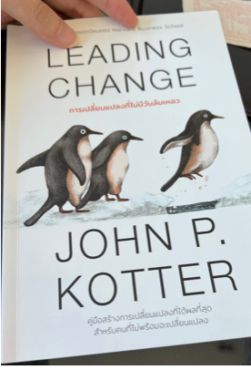

read “LEADING CHANGE” [1/12]

บทที่ 1 ทำไมการสร้างความเปลี่ยนแปลงครั้งใหญ่จึงล้มเหลว
- เกิดจากความผิดพลาด 8 อย่าง -
#1 ปล่อยให้เกิดความชะล่าใจมากเกินไป
ผู้บริหารประเมินความสามารถในการผลักดันสูงเกินไป และประเมินความยากในการดึงพนักงานออกจากเขตความสบายใจต่ำเกินไป
#2 ไม่สามารถสร้างทีมขับเคลื่อนที่มีอำนาจมากพอ
การสร้างทีมขับเคลื่อนที่ไม่มีอำนาจมากพอ จะไม่สามารถฝ่าฝันต้านทานแรงต่อต้านได้ ซึ่งทีมขับเคลื่อนที่มีอำนาจจะต้องประกอบไปด้วย ประธานบริษัท, หัวหน้าฝ่าย, หัวหน้าแผนก และพนักงานจำนวนหนึ่ง ที่พร้อมอุทิศตนให้กับการเปลี่ยนแปลง โดยทีมที่ประกอบไปด้วยคนเหล่านี้จะมีอำนาจในองค์กร ทั้งในด้านตำแหน่ง, ความเชี่ยญชาญ, การเข้าถึงข้อมูล, ชื่อเสียง, ความสัมพันธ์ และความเป็นผู้นำ
#3 ประเมินพลังของวิสัยทัศน์ต่ำเกินไป
วิสัยทัศน์ที่สมเหตุสมผลสำคัญมาก เพราะวิสัยทัศน์ช่วยกระตุ้นให้คนจำนวนมากลงมือทำ และเดินหน้าไปในทิศทางเดียวกัน ช่วยไม่ให้สับสน ช่วยให้สอดคล้อง ช่วยกำกับการตัดสินใจ
#4 สื่อสารวิสัยทัศน์น้อยกว่าที่ควร 10 เท่า (ไม่ก็ 100 เท่าหรือแม้กระทั่ง 1,000 เท่า)
ถ้าไม่มีการสื่อสารที่น่าเชื่อถือ องค์กรจะไม่มีทางโน้มน้าวให้พนักงานร่วมมือได้เลย ซึ่งการสื่อสารนั้นมีในรูปแบบคำพูด และการกระทำ โดยการกระทำมักทรงพลังมากกว่า ตัวอย่างอุปสรรคสำคัญ คือ บุคคลสำคัญในองค์กรแสดงการกระทำสวนทางกับคำพูด
#5 ปล่อยให้อุปสรรคเข้ามาขัดขวางวิสัยทัศน์ใหม่
แม้ว่าพนักงานจะยอมรับวิสัยทัศน์ใหม่ แต่อาจจะมีอุปสรรคเกิดขึ้นได้ ซึ่งอาจจะเป็นแค่สิ่งที่เกิดขึ้นแค่ในความคิดของพนักงานเอง ถ้าเป็นแบบนี้ความท้าทาย คือ ต้องโน้มน้าวให้พนักงานเชื่อว่าอุปสรรคไม่ได้เกิดขึ้นจริง แต่ถ้าหากอุปสรรคนั้นไม่ใช่แค่ความคิดในหัว แต่เป็นอุปสรรคของจริง ผู้บริหารก็ต้องเผชิญหน้าจัดการกำจัดอุปสรรคนั้นออกไป
#6 ไม่ยอมสร้างชัยชนะระยะสั้น
หากไม่มีชัยชนะระยะสั้น พนักงานจำนวนมากจะถอดใจ หรือไม่ก็ต่อต้านการเปลี่ยนแปลง การสร้างชัยชนะระยะสั้น คือ แรงกดดันที่เป็นประโยชน์ และมีความสำคัญต่อกระบวนการเปลี่ยนแปลง อีกทั้งยังช่วยลดความชะล่าใจ รวมถึงช่วยกระตุ้นให้เกิดความคิดวิเคราะห์เข้าใจว่าวิสัยทัศน์แห่งการเปลี่ยนแปลงนั้นสมเหตุสมผลจริง
#7 ประกาศชัยชนะเร็วเกินไป
ตราบใดที่การเปลี่ยนแปลงยังไม่ฝังรากลึกลงในวัฒนธรรมองค์กร (อาจต้องใช้เวลา 3–10 ปี) แนวทางใหม่ๆ ก็ยังคงเปราะบางและเสี่ยงที่จะเลือนหายไปได้ตลอดเวลา และเมื่อมีการฉลองชัยชนะ สุดท้ายพลังอันน่าเกรงขามของธรรมเนียมปฎิบัติแบบดั้งเดิมจะกลับคืนมา
#8 ไม่ปลูกฝังการเปลี่ยนแปลงลงในวัฒนธรรมองค์กร
มี 2 ปัจจัยในการปลูกฝังการเปลี่ยนแปลงลงในองค์กร คือ
1) พยายามแสดงให้พนักงานเห็นว่า พฤติกรรมและทัศนคติบางอย่างจะช่วยในการปรับปรุงผลการปฏิบัติงานได้อย่างไร ไม่ให้พนักงานคิดเชื่อมโยงกันไปเอง
2) ทุ่มเทไปกับการทำให้ผู้บริหารรุ่นใหม่ๆ ซึมซับแนวทางใหม่ๆ